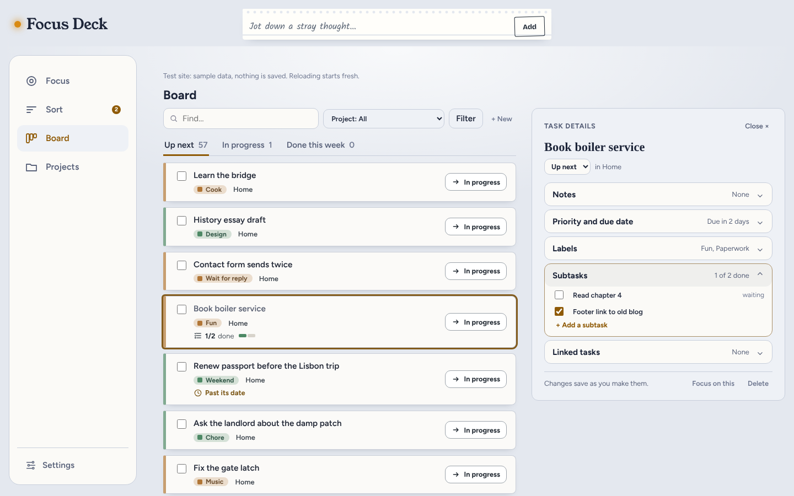
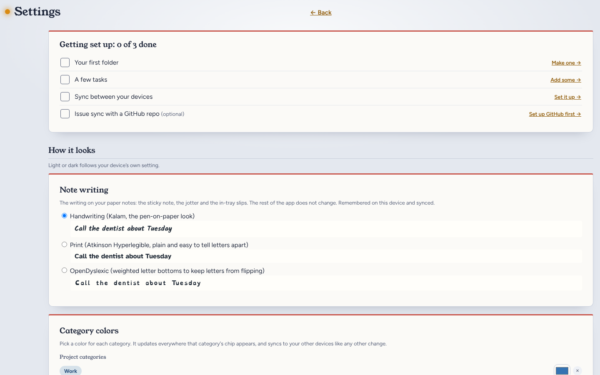
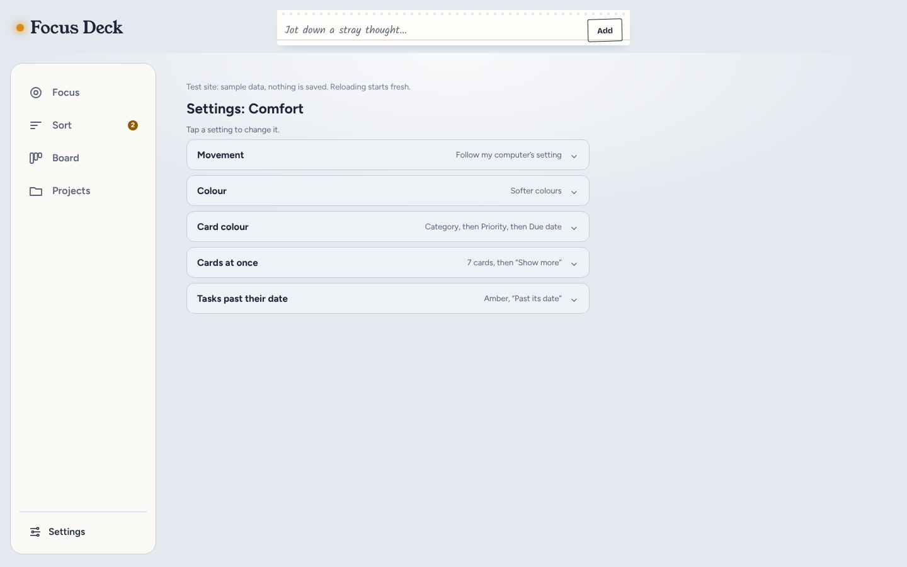

Focus Deck: today, and after the calm build
Both sides are real screens at 1440 pixels wide with the same sample tasks. Left: the app as it is now. Right: the test site, which is what the build copies into the app.
Board, with Book boiler service selected on the right
The app after the build

Settings
Today's app (top of a long page)

The app after the build (the new Comfort settings)

What changes on the right
- The header looks as it does today, with the large Focus Deck name and the centred "Jot down a stray thought" box, but it now stays at the top while you scroll.
- The side menu is wider, with a word beside each icon and Settings at the bottom, and starts just below the header. Projects stays in it.
- Up next, In progress and Done this week become tabs, with Find, Project and Filter above them. The row of project buttons is removed.
- Each card is coloured by its category and shows one coloured label. Seven cards show, then a "Show more" button.
- Each card has a "→ In progress" button. The project name only shows when you are looking at all projects.
- Selecting a card opens Task details beside the list, with each part folded into a row. Clicking the card again, or pressing Escape, closes it.
- Subtasks sit inside their parent task instead of appearing as cards of their own.
- Every setting shows as one folded row with its current value. A new Comfort group adds five settings: Movement, Colour, Card colour, Cards at once, and Tasks past their date.
Not shown: the plain-word renames (for example "Bin it" becomes "Delete") and the three Sort fixes. The test site has only the new Comfort settings; today's other settings fold into rows in the same way.